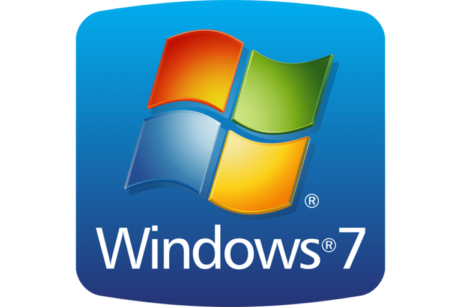
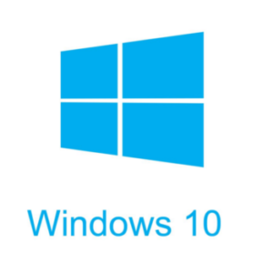

Versi - Versi Windows Yang Jimin tau bukan mimin:v

Versi ini merupakan Versi yang sudah ckup lumayan Tua
Windows 7 ini sudah di ada dari Jimin sd:v

Kalo yang ini sudah ada waktu Jimin Smp
Ini adalah versi terbaru yang Windows Luncurkan ke publik
- Windows Xp
- Windows 7
- Windows 8
- Windows 10